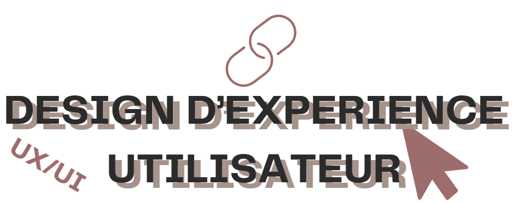
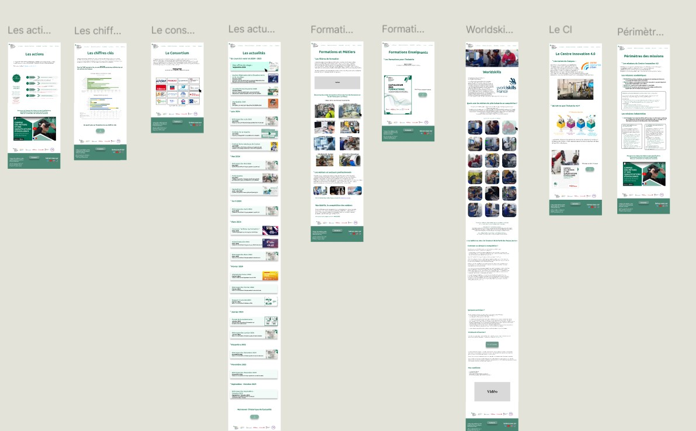
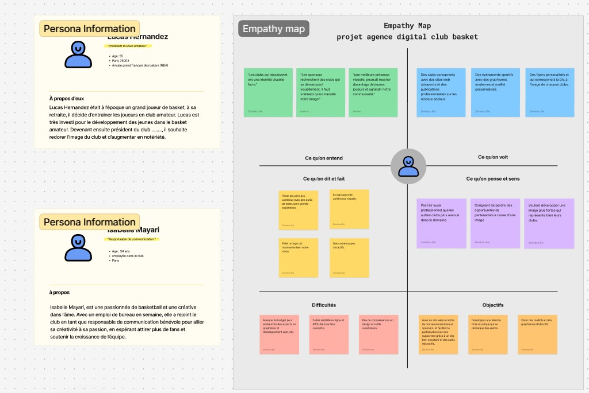

L'UX/UI design est un domaine qui m'était assez inconnu avant de commencer ma formation. Cependant, en apprenant les bases de l'expérience utilisateur (UX) et de l'interface utilisateur (UI), j'ai compris l'importance cruciale de ces éléments dans la création de sites web et d'applications. L'UX/UI design ne se limite pas seulement à l’aspect esthétique, mais englobe comment l'utilisateur interagit avec un produit. Même si je débute dans ce domaine, j'ai pris conscience de l'impact que peut avoir une interface bien pensée sur l'utilisation d'un site. Vous trouverez des projets où j'ai pu appliquer ces principes, en cherchant à améliorer la navigation et l'expérience globale pour l'utilisateur.
Cliquez pour en savoir plus.
Cliquez pour en savoir plus.


×